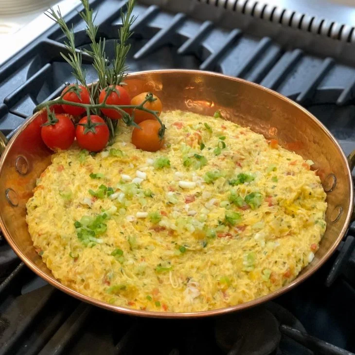

Bobo de siri(8 pessoas)

40 minutos
Voltar
Ingredientes:
- 1 kg de carne de siri limpa
- Suco de 2 limões-taiti
- 1 cebola grande picada
- 3 dentes de alho grandes picados
- 3 colheres de sopa de azeite de oliva
- 3 tomates picados sem sementes
- 2 pães franceses
- 700 ml de leite de coco
- 150 gramas de mandioca cozida na água
- 1 pimenta-dedo-de-moça grande picada sem sementes
- 2 colheres de sopa de coentro picado
- 2 colheres de sopa de salsinha picada
- 1/2 colher de chá de páprica-picante
- 2 e 1/2 colheres de sopa de azeite de dendê
- Sal a gosto
- Cebolinha, tomatinhos em rama e alecrim para decorar
Como fazer o Bobo de siri:
- Limpe e retire o excesso de água da carne de siri. Reserve.
- Retire a casca mais dura do pão, fatie e coloque em um bowl.
- Adicione os dois leites e deixe as fatias marinando por 10 minutos.
- Bata a mistura de pão e a mandioca cozida no liquidificador. Reserve
- Em uma panela grande, coloque o azeite e salteie a cebola e o alho.
- Adicione 2 colheres de sopa de azeite de dendê
- Acrescente a carne de siri e deixe secar o líquido na panela, mexendo sempre para não grudar.
- Adicionar o suco de limão e a pimenta-dedo-de-moça e cozinhe por cerca de 3 a 4 minutos, mexendo sempre.
- Coloque o tomate, a páprica, o coentro e a salsinha, mexendo por mais 3 ou 4 minutos.
- Adicione a mistura batida e mexa bem.
- Tempere com o sal e 1/2 colher de azeite de dendê para finalizar.
- Coloque no prato de servir, salpique cebolinha picada e enfeite com tomatinhos e alecrim.